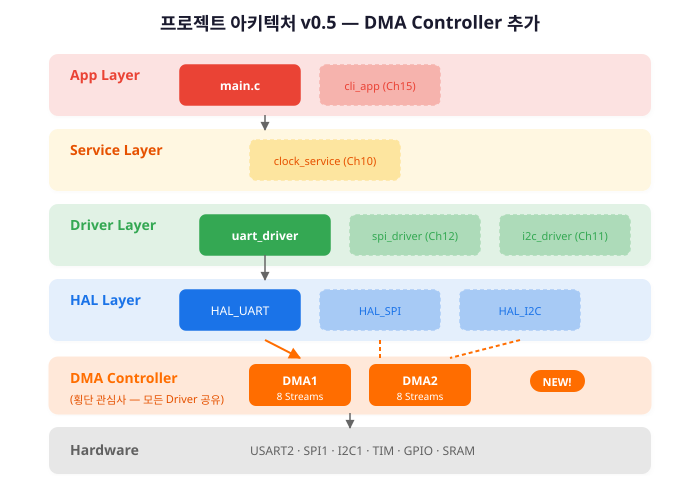
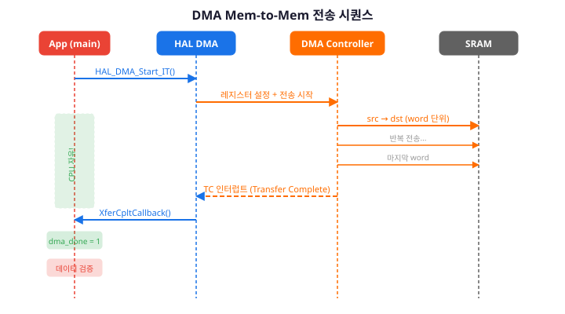
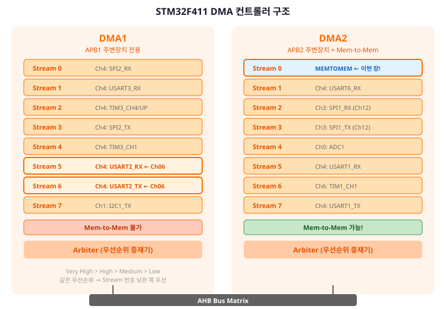
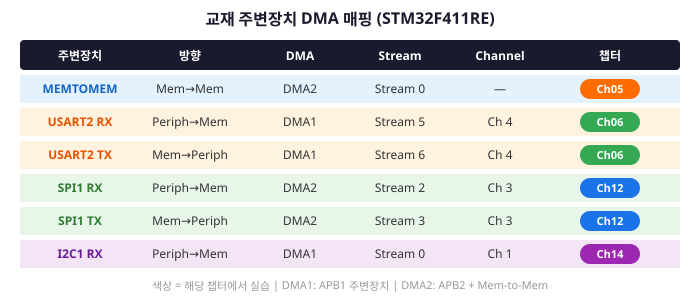
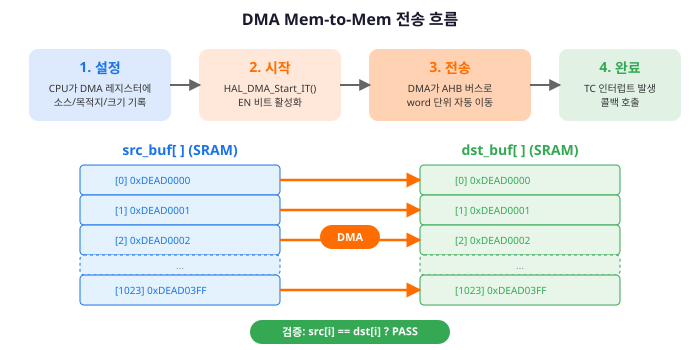
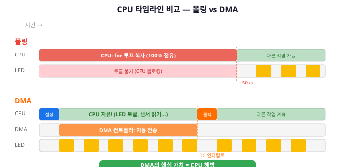
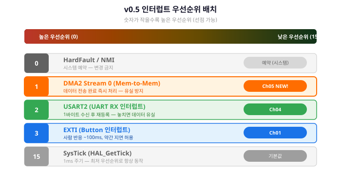
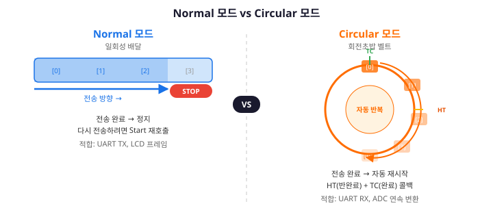
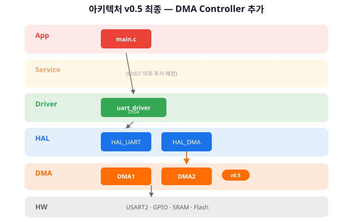

CPU를 해방하라 — DMA로 데이터를 자동 전송하고, 폴링 대비 성능을 직접 측정한다
여기까지 온 여러분의 성과를 확인합시다. Ch01에서 GPIO/EXTI, Ch02에서 로그 시스템, Ch03에서 4계층 아키텍처, Ch04에서 UART Driver까지 완성했습니다. 4개 챕터, 4개의 핵심 역량이 쌓였습니다. 이제 다섯 번째 블록을 올릴 차례입니다.
Ch04에서 우리는 uart_send()와 HAL_UART_Receive_IT()를 구현했습니다.
송신은 폴링, 수신은 인터럽트.
그런데 한 가지 불편한 진실이 있습니다.
HAL_UART_Transmit(&huart2, buf, len, 100)을 호출하면,
CPU는 len바이트가 모두 전송될 때까지 멈춥니다.
100바이트를 보내는 동안 CPU는 다른 일을 할 수 없습니다.
1초에 11,520바이트를 전송하는 115200bps에서 100바이트는 약 8.7ms.
100MHz로 동작하는 CPU가 8.7ms 동안 아무것도 못 한다면,
그 사이에 87만 클럭 사이클이 낭비됩니다.
이것은 마치 요리사가 직접 접시를 들고 손님 테이블까지 걸어가는 것과 같습니다. Ch03의 레스토랑 비유를 기억하시나요? 요리사(CPU)가 음식을 만드는 동안 서빙까지 직접 하면, 그 시간 동안 새 요리를 시작할 수 없습니다.
해결책은 간단합니다. 서빙 로봇을 도입하면 됩니다. 요리사는 "이 접시를 3번 테이블에"라고 지시만 하고, 즉시 다음 요리를 시작합니다. 서빙 로봇이 접시를 나르고, 배달이 끝나면 "완료했습니다"라고 보고합니다.
이 서빙 로봇이 바로 DMA(Direct Memory Access, 직접 메모리 접근)입니다. CPU 대신 메모리와 주변장치 사이에서 데이터를 자동으로 전송하는 하드웨어 엔진입니다. 이 챕터에서 DMA의 구조와 원리를 배우고, 실제로 폴링 대비 얼마나 빠른지 직접 측정합니다.
Ch04에서 우리는 Driver 레이어에 uart_driver를 추가하여 아키텍처를 v0.4로 업그레이드했습니다.
Ch05의 DMA는 기존 4계층(App → Service → Driver → HAL) 어디에 놓아야 할까요?
DMA는 특정 Driver 하나에 속하지 않습니다. UART도, SPI도, I2C도, Timer도 DMA를 사용합니다. DMA는 모든 Driver에 공통으로 적용되는 횡단 관심사(Cross-cutting Concern)입니다. 레스토랑 비유로 말하면, 서빙 로봇은 특정 요리사에게만 속하지 않고, 모든 요리사가 공유하는 인프라입니다.
아키텍처 다이어그램에서 DMA는 HAL 레이어 아래, 하드웨어와 HAL 사이에 위치합니다. HAL 함수 내부에서 DMA 컨트롤러를 활용하여 데이터를 전송하고, Driver는 이를 의식하지 않아도 됩니다.

이번 챕터에서는 새로운 Driver 모듈을 만들지 않습니다.
DMA는 HAL이 내부적으로 관리하는 하드웨어 자원이므로,
우리가 호출하는 것은 HAL DMA API입니다.
Ch06에서 uart_driver.c 내부를 DMA로 교체할 때도,
uart_driver.h 인터페이스는 단 한 줄도 변경되지 않습니다.
/* HAL DMA 핵심 API — 이번 챕터에서 사용하는 함수들 */
/* Mem-to-Mem DMA 전송 시작 (인터럽트 모드) */
HAL_StatusTypeDef HAL_DMA_Start_IT(
DMA_HandleTypeDef *hdma, /* DMA 핸들 */
uint32_t SrcAddress, /* 소스 주소 */
uint32_t DstAddress, /* 목적지 주소 */
uint32_t DataLength /* 전송 데이터 개수 */
);
/* DMA 전송 완료 콜백 — 함수 포인터로 등록 */
hdma->XferCpltCallback = my_cplt_handler;
/* DMA 전송 에러 콜백 — 함수 포인터로 등록 */
hdma->XferErrorCallback = my_error_handler;
/* 주의: UART의 __weak 콜백(HAL_UART_RxCpltCallback)과 달리,
* DMA 콜백은 핸들의 함수 포인터에 직접 등록하는 방식입니다. */DMA Mem-to-Mem 전송의 흐름을 시퀀스 다이어그램으로 확인합니다. App이 HAL API를 호출하면, DMA 컨트롤러가 CPU 대신 메모리 간 데이터를 복사하고, 완료 시 인터럽트로 알려줍니다.

이 챕터를 완료하면 다음을 할 수 있습니다.
DMA 컨트롤러는 CPU와 독립적으로 동작하는 데이터 전송 전용 하드웨어 엔진입니다. CPU가 "이 데이터를 저기로 옮겨줘"라고 명령하면, DMA 컨트롤러가 버스를 통해 직접 데이터를 이동시킵니다. 전송이 끝나면 인터럽트로 "끝났다"고 알려줍니다. 그 사이 CPU는 다른 연산을 자유롭게 수행할 수 있습니다.
STM32F411RE에는 2개의 DMA 컨트롤러가 있습니다.
한 Stream은 한 시점에 하나의 Channel만 활성화할 수 있습니다. 예를 들어 DMA1 Stream 6은 USART2_TX(Channel 4)와 I2C1_TX(Channel 1)를 모두 연결할 수 있지만, 동시에 사용할 수는 없습니다. 이것이 DMA 설계에서 Stream 충돌을 확인해야 하는 이유입니다.

이 교재에서 사용하는 주변장치의 DMA 매핑입니다. CubeMX가 자동 설정하지만, 충돌 시 수동 조정이 필요하므로 참고로 알아둡니다.

여러 Stream이 동시에 전송을 요청하면, 우선순위가 높은 쪽이 버스를 먼저 사용합니다. 소프트웨어 우선순위 4단계가 있습니다:
소프트웨어 우선순위가 같으면, Stream 번호가 낮을수록 우선입니다 (Stream 0 > Stream 1 > ...). 이것은 하드웨어 중재기(Arbiter)가 결정합니다.
DMA의 효과를 체감하려면, 먼저 "DMA 없이 얼마나 걸리는지" 기준선(Baseline)을 측정해야 합니다. 가장 단순한 방법인 for 루프 복사를 구현하고, 정밀하게 시간을 측정합니다.
Ch04까지 시간 측정에 HAL_GetTick()을 사용했습니다.
이 함수는 1ms 해상도입니다.
하지만 메모리 복사는 마이크로초(us) 단위로 끝나므로 1ms로는 부족합니다.
ARM Cortex-M4에는 DWT(Data Watchpoint and Trace)라는 디버그 유닛이 내장되어 있습니다. 그 안의 Cycle Counter(CYCCNT) 레지스터는 CPU 클럭 사이클마다 1씩 증가합니다. STM32F411RE가 100MHz로 동작하면, 1 사이클 = 10ns. 시작 전 카운터를 읽고, 종료 후 다시 읽어 차이를 구하면 나노초 수준의 정밀 측정이 가능합니다.
/* DWT Cycle Counter 초기화 및 사용법 */
static void dwt_init(void)
{
CoreDebug->DEMCR |= CoreDebug_DEMCR_TRCENA_Msk;
DWT->CYCCNT = 0;
DWT->CTRL |= DWT_CTRL_CYCCNTENA_Msk;
LOG_D("DWT Cycle Counter 초기화 완료");
}
/* 사용 예시 */
uint32_t start = DWT->CYCCNT;
/* ... 측정할 코드 ... */
uint32_t end = DWT->CYCCNT;
uint32_t cycles = end - start;
uint32_t us = cycles / (SystemCoreClock / 1000000);
LOG_I("소요 시간: %lu cycles (%lu us)", cycles, us);
1024개의 uint32_t (4KB)를 소스 배열에서 목적지 배열로 복사합니다.
CPU가 한 word씩 읽고 쓰는 폴링 방식입니다.
/* ch05_01_memcpy_polling.c — 폴링 메모리 복사 + 시간 측정 */
#include "main.h"
#include "log.h"
#include <string.h>
#define BUF_SIZE 1024 /* uint32_t 1024개 = 4KB */
static uint32_t src_buf[BUF_SIZE];
static uint32_t dst_buf[BUF_SIZE];
/* DWT 초기화 */
static void dwt_init(void)
{
CoreDebug->DEMCR |= CoreDebug_DEMCR_TRCENA_Msk;
DWT->CYCCNT = 0;
DWT->CTRL |= DWT_CTRL_CYCCNTENA_Msk;
}
/* 소스 버퍼에 테스트 패턴 채우기 */
static void fill_test_pattern(void)
{
for (uint32_t i = 0; i < BUF_SIZE; i++) {
src_buf[i] = 0xDEAD0000 | i;
}
}
/* 폴링 복사 (for 루프) */
static uint32_t copy_polling(void)
{
uint32_t start = DWT->CYCCNT;
for (uint32_t i = 0; i < BUF_SIZE; i++) {
dst_buf[i] = src_buf[i];
}
uint32_t end = DWT->CYCCNT;
return end - start;
}
/* 검증 */
static int verify_copy(void)
{
for (uint32_t i = 0; i < BUF_SIZE; i++) {
if (src_buf[i] != dst_buf[i]) {
LOG_E("검증 실패: idx=%lu, src=0x%08lX, "
"dst=0x%08lX", i, src_buf[i], dst_buf[i]);
return -1;
}
}
return 0;
}
void polling_copy_demo(void)
{
dwt_init();
fill_test_pattern();
memset(dst_buf, 0, sizeof(dst_buf));
uint32_t cycles = copy_polling();
uint32_t us = cycles / (SystemCoreClock / 1000000);
LOG_I("=== 폴링 복사 결과 ===");
LOG_I(" 크기: %lu bytes", BUF_SIZE * 4);
LOG_I(" 소요: %lu cycles (%lu us)", cycles, us);
if (verify_copy() == 0) {
LOG_I(" 검증: PASS");
}
}
100MHz 기준으로 1024 word(4KB) 복사에 약 3,000~5,000 사이클 (30~50us)이 예상됩니다.
이 시간 동안 CPU는 for 루프에 묶여 다른 작업을 수행할 수 없습니다.
LED 토글, 센서 읽기, UART 수신 처리 — 모두 대기해야 합니다.
이제 같은 작업을 DMA로 수행합니다. CPU가 "시작"만 명령하고, 실제 데이터 이동은 DMA 컨트롤러가 처리합니다. 전송이 끝나면 인터럽트 콜백으로 알려줍니다.
DMA Mem-to-Mem은 CubeMX에서 다음과 같이 설정합니다:
CubeMX가 코드를 생성하면, hdma_memtomem_dma2_stream0 핸들이 자동으로 만들어집니다.
이 핸들을 통해 DMA 전송을 제어합니다.

전송 흐름은 4단계입니다:
HAL_DMA_Start_IT() 호출. DMA 컨트롤러가 전송을 시작합니다./* ch05_02_dma_mem_to_mem.c — DMA 메모리 복사 */
#include "main.h"
#include "log.h"
#include <string.h>
#define BUF_SIZE 1024
static uint32_t src_buf[BUF_SIZE];
static uint32_t dst_buf[BUF_SIZE];
static volatile uint8_t dma_complete = 0;
static volatile uint8_t dma_error = 0;
extern DMA_HandleTypeDef hdma_memtomem_dma2_stream0;
/* DMA 전송 완료 콜백 */
static void dma_xfer_cplt(DMA_HandleTypeDef *hdma)
{
dma_complete = 1;
LOG_D("DMA 전송 완료 콜백 호출됨");
}
/* DMA 전송 에러 콜백 */
static void dma_xfer_error(DMA_HandleTypeDef *hdma)
{
dma_error = 1;
LOG_E("DMA 전송 에러 발생!");
}
/* 콜백 등록 */
static void dma_register_callbacks(void)
{
hdma_memtomem_dma2_stream0.XferCpltCallback
= dma_xfer_cplt;
hdma_memtomem_dma2_stream0.XferErrorCallback
= dma_xfer_error;
}
void dma_copy_demo(void)
{
/* 테스트 패턴 준비 */
for (uint32_t i = 0; i < BUF_SIZE; i++) {
src_buf[i] = 0xDEAD0000 | i;
}
memset(dst_buf, 0, sizeof(dst_buf));
/* 콜백 등록 */
dma_register_callbacks();
/* 플래그 초기화 */
dma_complete = 0;
dma_error = 0;
LOG_I("DMA Mem-to-Mem 전송 시작...");
/* DMA 전송 시작 */
HAL_StatusTypeDef status;
status = HAL_DMA_Start_IT(
&hdma_memtomem_dma2_stream0,
(uint32_t)src_buf, /* 소스 주소 */
(uint32_t)dst_buf, /* 목적지 주소 */
BUF_SIZE /* word 개수 */
);
if (status != HAL_OK) {
LOG_E("DMA 시작 실패: %d", status);
return;
}
/* === CPU는 여기서 다른 작업 가능! === */
LOG_D("DMA 전송 중... CPU는 자유!");
/* 완료 대기 */
while (!dma_complete && !dma_error) {
/* 실무에서는 여기서 다른 작업 수행 */
}
if (dma_error) {
LOG_E("DMA 전송 실패");
return;
}
/* 데이터 검증 */
for (uint32_t i = 0; i < BUF_SIZE; i++) {
if (src_buf[i] != dst_buf[i]) {
LOG_E("검증 실패: idx=%lu", i);
return;
}
}
LOG_I("DMA 복사 완료 + 검증 PASS");
}
핵심은 HAL_DMA_Start_IT() 호출 직후,
CPU가 while 루프에서 대기만 하는 것이 아니라 다른 작업을 수행할 수 있다는 점입니다.
이 예제에서는 단순히 대기하지만, §5.4에서 LED 토글을 삽입하여 CPU 해방을 시각적으로 증명합니다.
이제 본론입니다. §5.2의 폴링 복사와 §5.3의 DMA 복사를 동일 조건에서 비교합니다. 100회 반복 측정으로 평균값을 구하고, CPU 해방 효과를 LED 토글로 시각화합니다.

/* ch05_03_performance_compare.c — 폴링 vs DMA 성능 비교 */
#include "main.h"
#include "log.h"
#include "uart_driver.h" /* Ch04 Driver 재사용 */
#include <stdio.h>
#include <string.h>
#define BUF_SIZE 1024
#define REPEAT 100
static uint32_t src_buf[BUF_SIZE];
static uint32_t dst_buf[BUF_SIZE];
static volatile uint8_t dma_done = 0;
extern DMA_HandleTypeDef hdma_memtomem_dma2_stream0;
/* DWT 초기화 */
static void dwt_init(void)
{
CoreDebug->DEMCR |= CoreDebug_DEMCR_TRCENA_Msk;
DWT->CYCCNT = 0;
DWT->CTRL |= DWT_CTRL_CYCCNTENA_Msk;
}
/* DMA 완료 콜백 */
static void on_dma_done(DMA_HandleTypeDef *hdma)
{
dma_done = 1;
}
/* 테스트 패턴 */
static void fill_pattern(void)
{
for (uint32_t i = 0; i < BUF_SIZE; i++) {
src_buf[i] = 0xCAFE0000 | i;
}
}/* 폴링 복사 100회 측정 */
static uint32_t bench_polling(void)
{
uint32_t total = 0;
for (int r = 0; r < REPEAT; r++) {
memset(dst_buf, 0, sizeof(dst_buf));
uint32_t s = DWT->CYCCNT;
for (uint32_t i = 0; i < BUF_SIZE; i++) {
dst_buf[i] = src_buf[i];
}
uint32_t e = DWT->CYCCNT;
total += (e - s);
}
return total / REPEAT;
}
/* DMA 복사 100회 측정 */
static uint32_t bench_dma(void)
{
hdma_memtomem_dma2_stream0.XferCpltCallback
= on_dma_done;
uint32_t total = 0;
for (int r = 0; r < REPEAT; r++) {
memset(dst_buf, 0, sizeof(dst_buf));
dma_done = 0;
uint32_t s = DWT->CYCCNT;
HAL_DMA_Start_IT(
&hdma_memtomem_dma2_stream0,
(uint32_t)src_buf,
(uint32_t)dst_buf,
BUF_SIZE);
while (!dma_done) { /* 대기 */ }
uint32_t e = DWT->CYCCNT;
total += (e - s);
}
return total / REPEAT;
}void performance_compare(void)
{
dwt_init();
fill_pattern();
LOG_I("=== 성능 비교 시작 ===");
LOG_I("버퍼 크기: %lu bytes, 반복: %d회",
(uint32_t)(BUF_SIZE * 4), REPEAT);
/* 폴링 측정 */
uint32_t poll_cycles = bench_polling();
uint32_t poll_us = poll_cycles
/ (SystemCoreClock / 1000000);
/* DMA 측정 */
uint32_t dma_cycles = bench_dma();
uint32_t dma_us = dma_cycles
/ (SystemCoreClock / 1000000);
/* 결과 출력 (Ch04 uart_send 활용!) */
LOG_I("=== 결과 ===");
LOG_I("폴링: %5lu cycles (%lu us)", poll_cycles,
poll_us);
LOG_I("DMA : %5lu cycles (%lu us)", dma_cycles,
dma_us);
if (dma_cycles > 0) {
LOG_I("비율: 폴링/DMA = %.1fx",
(float)poll_cycles / dma_cycles);
}
/* UART로 PC 터미널에도 출력 */
char msg[128];
snprintf(msg, sizeof(msg),
"\r\n[BENCH] Poll=%lu us, DMA=%lu us\r\n",
poll_us, dma_us);
uart_send_string(msg);
}STM32F411RE (100MHz, Flash에서 실행) 기준 예상 결과:
"2~3배밖에 안 빠르네?"라고 생각할 수 있습니다. Mem-to-Mem에서는 AHB 버스 대역폭이 병목이므로 극적인 차이는 나지 않습니다. DMA의 진짜 가치는 속도가 아니라 CPU 해방입니다.
폴링 복사 중과 DMA 복사 중에 LED를 토글하여 CPU 해방 효과를 눈으로 확인합니다.
/* CPU 해방 시각화 — LED 토글 비교 */
void cpu_freedom_demo(void)
{
LOG_I("=== CPU 해방 시각화 ===");
/* 1) 폴링 중 LED 토글 시도 */
LOG_I("[폴링] 복사 시작 — LED 토글 불가");
for (int r = 0; r < 1000; r++) {
for (uint32_t i = 0; i < BUF_SIZE; i++) {
dst_buf[i] = src_buf[i];
}
/* 여기에 LED 토글을 넣어도
복사에 묶여서 주기가 불규칙 */
}
LOG_I("[폴링] 완료");
/* 2) DMA 중 LED 토글 */
LOG_I("[DMA] 복사 시작 — LED 자유롭게 토글");
for (int r = 0; r < 1000; r++) {
dma_done = 0;
HAL_DMA_Start_IT(
&hdma_memtomem_dma2_stream0,
(uint32_t)src_buf,
(uint32_t)dst_buf, BUF_SIZE);
while (!dma_done) {
/* CPU가 자유! LED를 토글할 수 있다 */
HAL_GPIO_TogglePin(GPIOA, GPIO_PIN_5);
}
}
LOG_I("[DMA] 완료 — LED 정상 토글 확인");
}오실로스코프나 로직 애널라이저로 PA5(LED)를 관찰하면 차이가 명확합니다. 폴링 구간에서는 LED 토글 주기가 불규칙(복사에 묶임)하고, DMA 구간에서는 안정적인 토글 파형이 나타납니다.
Ch01에서 우리는 NVIC의 기초를 배웠습니다. EXTI 인터럽트를 Enable하고, 콜백 함수를 작성했습니다. Ch04에서는 UART 인터럽트를 추가했습니다. 이제 DMA 인터럽트까지 추가되면서, 인터럽트 3개가 공존합니다. 이들의 우선순위를 어떻게 배치할지가 중요해집니다.
STM32F4의 NVIC는 PreemptPriority(선점 우선순위)와 SubPriority(부 우선순위) 두 단계로 우선순위를 관리합니다. 기본 설정(NVIC_PRIORITYGROUP_4)에서는 PreemptPriority 16단계(0~15), SubPriority 0으로 동작합니다. 숫자가 작을수록 우선순위가 높습니다.
/* NVIC 우선순위 배치 예시 (v0.5 프로젝트) */
/* PreemptPriority: 낮은 숫자 = 높은 우선순위 */
/* DMA 전송 완료 — 데이터 유실 방지 */
HAL_NVIC_SetPriority(DMA2_Stream0_IRQn, 1, 0);
/* UART 수신 — 바이트 유실 방지 */
HAL_NVIC_SetPriority(USART2_IRQn, 2, 0);
/* EXTI (버튼) — 약간 지연 허용 */
HAL_NVIC_SetPriority(EXTI15_10_IRQn, 3, 0);
/* SysTick — HAL_GetTick() 기반, 항상 동작 필요 */
/* 기본값 15 (최저) — 변경하지 않음 */일반적인 우선순위 배치 원칙은: 데이터 유실 위험이 높은 순서로 높은 우선순위를 부여합니다.

우선순위 역전(Priority Inversion)은 높은 우선순위 태스크가 낮은 우선순위 태스크에 의해 간접적으로 블로킹되는 현상입니다. RTOS 없이 bare-metal 환경에서도 발생할 수 있습니다.
임베디드에서 흔한 시나리오:
/* 우선순위 역전 예시 — 잘못된 패턴 */
volatile uint8_t shared_flag = 0;
/* 낮은 우선순위 ISR (EXTI 버튼) */
void EXTI15_10_IRQHandler(void)
{
shared_flag = 1;
/* 여기서 긴 작업을 수행하면... */
some_long_operation(); /* ← 문제! */
shared_flag = 0;
}
/* 높은 우선순위 ISR (DMA 완료) */
void DMA2_Stream0_IRQHandler(void)
{
while (shared_flag) {
/* 낮은 우선순위 ISR이 끝나길
대기 — 우선순위 역전! */
}
process_dma_data();
}
위 코드에서 DMA 완료 ISR(높은 우선순위)이 shared_flag를 기다립니다.
하지만 EXTI ISR(낮은 우선순위)이 선점되어 shared_flag = 0을 실행하지 못하면,
DMA ISR은 영원히 대기합니다 — 데드락(deadlock)입니다.
ISR과 메인 루프(또는 다른 ISR)가 공유 변수에 접근할 때는 Critical Section(임계 구역)으로 보호해야 합니다. 가장 단순한 방법은 인터럽트를 잠시 비활성화하는 것입니다.
/* Critical Section 패턴 */
/* 방법 1: 전체 인터럽트 비활성화 (가장 단순) */
__disable_irq();
/* --- 공유 변수 접근 --- */
shared_counter++;
/* --- 접근 끝 --- */
__enable_irq();
/* 방법 2: PRIMASK 저장/복원 (중첩 안전) */
/* 이전 인터럽트 상태를 저장하고 복원 */
uint32_t primask = __get_PRIMASK();
__disable_irq();
/* --- 공유 변수 접근 --- */
ring_buf_head = (ring_buf_head + 1) % BUF_SIZE;
/* --- 접근 끝 --- */
__set_PRIMASK(primask); /* 이전 상태 복원 */Critical Section의 핵심 규칙:
__disable_irq() 전에 __get_PRIMASK()로 이전 상태를 저장하고, 끝나면 복원합니다. 중첩 호출 시 안전합니다.__disable_irq()를 호출하면 다른 ISR도 블로킹됩니다. ISR은 최대한 짧게 유지하세요.이번 챕터에서 Mem-to-Mem 전송을 실습했습니다. 마무리하기 전에, DMA의 3가지 전송 모드와 2가지 동작 모드를 정리합니다. 이후 챕터에서 이 개념들이 반복 등장하므로, 여기서 전체 그림을 잡아둡니다.

HAL_DMA_Start_IT()를 다시 호출해야 합니다.
이번 챕터의 Mem-to-Mem에서 사용했습니다.
목표: DMA Mem-to-Mem 전송을 구현하고, 폴링 대비 성능을 측정하여 CPU 해방 효과를 체감한다.
환경: STM32CubeIDE, NUCLEO-F411RE, 시리얼 터미널
기존 v0.4 프로젝트를 열고 다음을 추가합니다:
§5.4의 performance_compare()와 cpu_freedom_demo()를
main.c에서 호출합니다.
/* main.c — v0.5 (DMA 성능 측정 추가) */
#include "uart_driver.h"
#include "log.h"
extern void performance_compare(void);
extern void cpu_freedom_demo(void);
int main(void)
{
HAL_Init();
SystemClock_Config();
MX_GPIO_Init();
MX_USART2_UART_Init();
MX_DMA_Init(); /* DMA 초기화 (CubeMX 생성) */
uart_driver_init();
LOG_I("=== 시스템 v0.5 시작 ===");
uart_send_string("System v0.5 Ready\r\n");
/* DMA 성능 측정 */
performance_compare();
/* CPU 해방 시각화 */
cpu_freedom_demo();
while (1) {
/* Ch04 기존 코드 유지 */
if (uart_available() > 0) {
uint8_t cmd = uart_read_byte();
switch (cmd) {
case 'B': /* Benchmark 재실행 */
performance_compare();
break;
case 'L':
HAL_GPIO_TogglePin(GPIOA, GPIO_PIN_5);
uart_send_string("[CMD] LED toggled\r\n");
break;
}
}
}
}예상 결과: 시리얼 터미널에 성능 측정 결과가 출력됩니다.
[INFO ] === 시스템 v0.5 시작 ===
[INFO ] === 성능 비교 시작 ===
[INFO ] 버퍼 크기: 4096 bytes, 반복: 100회
[INFO ] === 결과 ===
[INFO ] 폴링: 4200 cycles (42 us)
[INFO ] DMA : 1800 cycles (18 us)
[INFO ] 비율: 폴링/DMA = 2.3x
[BENCH] Poll=42 us, DMA=18 us
[INFO ] === CPU 해방 시각화 ===
[INFO ] [폴링] 복사 시작 — LED 토글 불가
[INFO ] [폴링] 완료
[INFO ] [DMA] 복사 시작 — LED 자유롭게 토글
[INFO ] [DMA] 완료 — LED 정상 토글 확인이 챕터에서 아키텍처에 DMA Controller가 횡단 관심사로 추가되어 v0.5로 업그레이드되었습니다. DMA는 특정 Driver에 속하지 않고, HAL이 내부적으로 활용하는 데이터 전송 인프라입니다.

BUF_SIZE를 512, 1024, 2048, 4096으로 변경하며 폴링과 DMA 성능을 각각 측정하시오.
결과를 표로 정리하고, 버퍼 크기와 성능 비율의 관계를 분석하시오.
src_buf[i] != dst_buf[i]인 인덱스를 로그로 출력하도록 구현하시오.